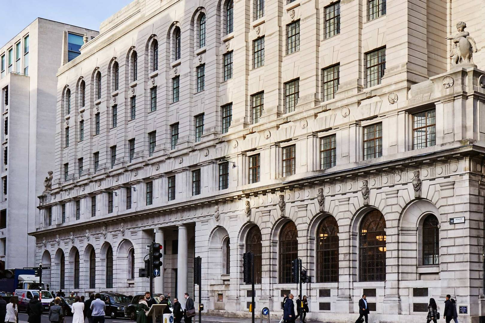
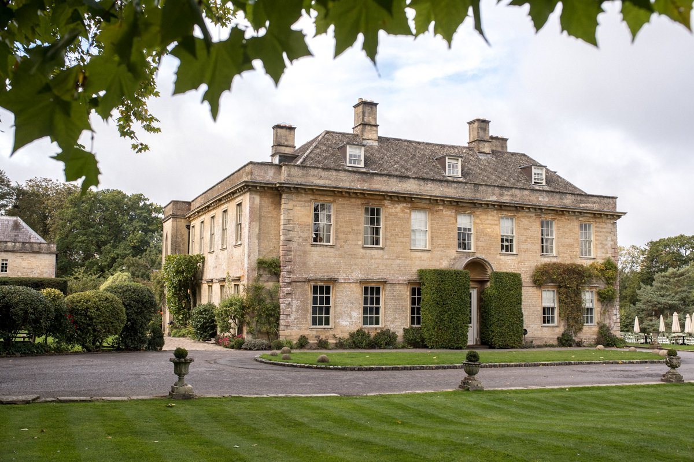
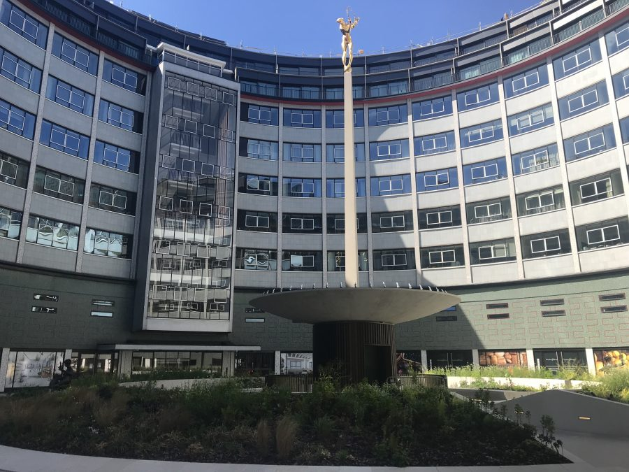

The Ned
The Ned is a hotel, members club and collection of restaurants in the City of London. Set in the former Midland Bank building, The Ned was designed by Sir Edwin 'Ned' Lutyens in 1924. The heritage building's restaurants include Cecconi's City of London, Millie's Lounge, Malibu Kitchen, Kaia, Café Sou, Zobler's Deli, Lutyens Grill and The Roof Bar. There are 252 bedrooms and suites channeling 1920s and 1930s design, a range of men’s and women’s grooming services and ‘Ned’s Club’, where members and hotel guests have access to a rooftop pool, gym, spa, hamam and The Vault late night lounge bar.
Price: 460.870$ to 1011.85$
the Babington House
Soho House was founded in London in 1995 as a home from home for people working in creative fields, Local membership provides access to the club spaces – restaurants and bars, the gym, pool and Cowshed spa where available – in your local HouseIn the Main House and Coach House there are 23 bedrooms – including the Playroom – a further five family rooms in the Stable Block- and three private Walled Garden rooms. The Lodge is a short walk from the Main House, and overlooking the Babington House lake is our secluded two-bedroom Cabin.
Price:from 335.8$ to 820.2$
White City House
45 BEDROOMS FROM TINY TO MEDIUM, INSPIRED BY MID-CENTURY DESIGN
Price:from 171$ to 273$
Note:
If you have a comment about a certain vacation destination or about our website feel free to visit the feedback webpage at the end of the page.